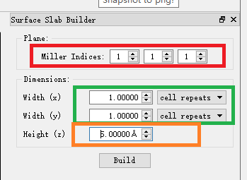

Creating Slab (3 Methods)
- File->Import->Crystal->elements->Au-Gold.cif
- Crystallography->Build->Slab

- Change Lattice paratmer C from 40 to 20.
- Crystallography->Wrap Atoms to Cell (可能会有重叠原子，可用VESTA去除)
- Crystallography->Translate atoms:
- 打开BURAI.exe, 将POSCAR/ CONTCAR/xyz/xsf/cif文件拖入Burai打开
- Modeler->Slab Model (111)->Build，调整厚度width/cell和真空层大小.
- 点击左下角\leftarrow,再点一次\leftarrow保存结构。
- Cell->Bravais Lattite: Free
- Ctrl+s保存项目，进入项目目录， g2g espresso.geom.in Au111.cif。
Too Large Cell
- 使用Avogador/Avogador2打开Au111.cif
- 设置对称性Tolerance为0.1,施加对称性，转换为Primitive Cell。
- 导出为Au111_prim.pdb/ Au111_prim.cif。
- 点击Download,如果未弹出窗口，右键复制链接新窗口打开